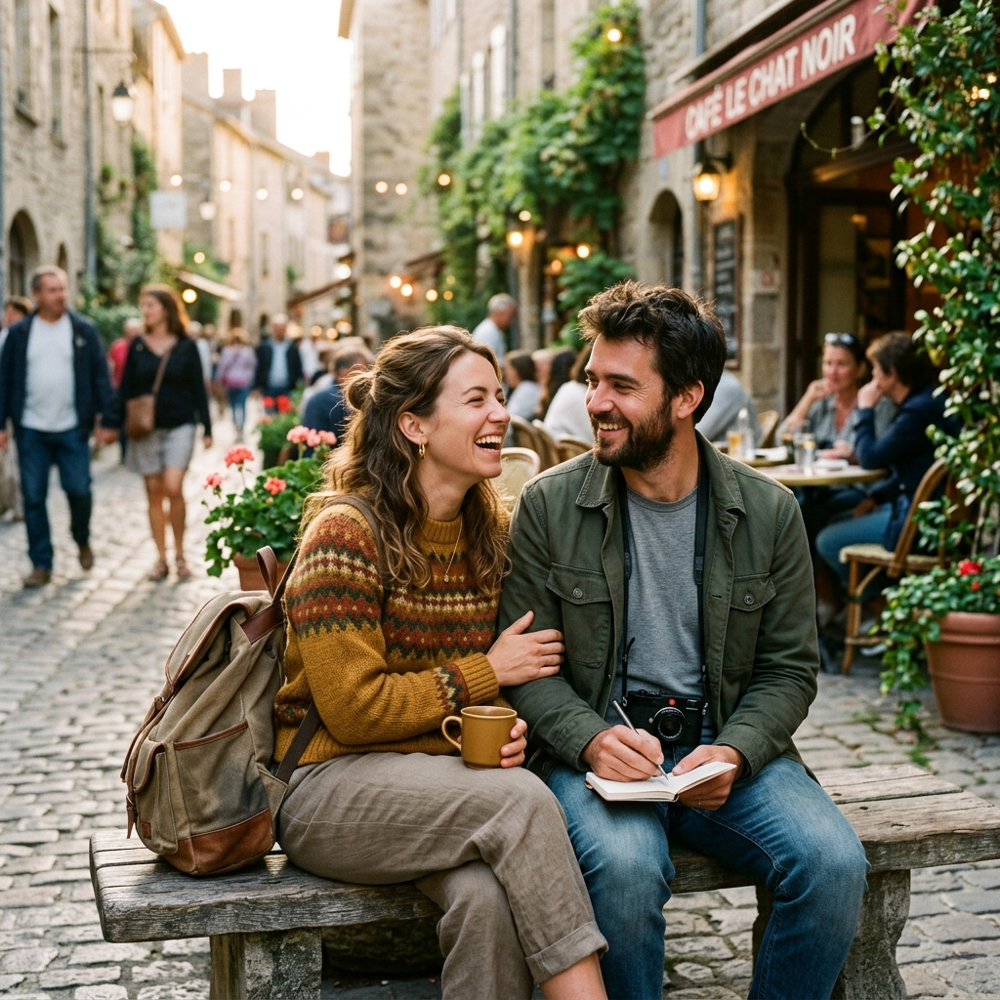

We didn't grow up traveling the world, and we aren't trust fund babies. When we finally started traveling internationally in our late 20s, we quickly realized the industry was deeply polarized.
On one end: the exhausting, chaotic backpacker route focused purely on budget. On the other: hyper-luxury resorts that felt completely disconnected from the local culture.
We wanted the middle ground. The sweet spot. We wanted to stay in safe private rooms that were both beautiful and affordable, eat authentic food and drink, rent scooters, and meet locals—but also have a quiet oasis to retreat to at the end of the day. We call it "scrappy luxury."
After years of trial and error, learning how to pace our trips so we actually returned home refreshed instead of burnt out, friends started asking us to plan their trips. That's how Lost & Sound was born.
Our mission is simple: to help couples and solo travelers see the world deeply and comfortably, without the overwhelm of planning.
Book a Planning Call